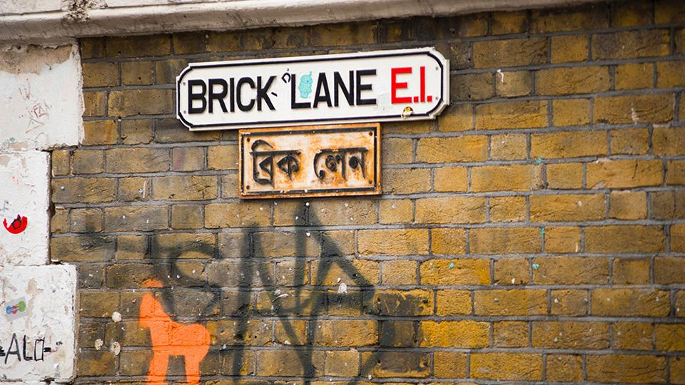

Tower Hamlets Council Opposed the Bangladeshi-Designed Housing Scheme. Official Documents Prove a Labour Minister Approved It.
A £500m Brick Lane development. Over 30,000 households on the waiting list. Six social homes, designed for larger Bangladeshi families. Signed off by Labour's housing minister.
- On 29 July 2026, Labour housing minister Matthew Pennycook approved the £500m Truman Brewery scheme on Brick Lane, over the objections of Tower Hamlets Council.
- Out of 44 homes, only six are for social rent, and the Government's own decision letter says they were "specifically designed" for "larger Bangladeshi heritage families".
- The word "Bangladeshi" appears 27 times in the official decision document. The word "British" does not appear once.
- Over 30,000 households are on the Tower Hamlets housing waiting list. Only 944 homes were let in the whole of the last year.
- More than a quarter of residents do not speak English as their main language, and around 3,000 cannot speak it at all.
PURPOSE: To set out, from the Government's own decision documents and official statistics, what Labour approved on Brick Lane, who the homes were designed for, and who is left waiting.
Over 30,000 households are waiting for a home in Tower Hamlets. This summer, Labour approved a £500m development on Brick Lane, and the Government's own paperwork shows exactly who the handful of social homes were built around.
What Labour signed off
The Truman Brewery scheme, put forward by Truman Estates and Zeloof LLP, covers three sites around Brick Lane. It brings five new office buildings, a data centre, a cinema, a supermarket and market space.
It also brings 44 homes. Six of them are for social rent.
Ministers were far more excited about the data centre than the housing. The decision letter calls its public benefits "very significant indeed".
Who the six homes were built for
The decision letter is explicit. The six social-rent homes, with three and four bedrooms, were:
"specifically designed to meet local housing needs and accommodate larger Bangladeshi heritage families"
It goes further. The developers' own architects told the public inquiry that the family homes were given a separate kitchen from the dining and living room, and that this was "a specific request from the Bangladeshi heritage community".
Not the local community. The local Bangladeshi community.
We searched the full 249-page decision letter and Inspector's Report. The word "Bangladeshi" appears 27 times. The word "British" appears nowhere.
Against what need
According to the council's own figures, 30,519 households were on the Tower Hamlets housing register on 30 September 2026. In the whole of the last year, from April 2025 to March 2026, just 944 homes were let across the entire borough.
Over 13,000 households in Tower Hamlets live in overcrowded conditions, again by the council's own count.
Against that, a £500m scheme on one of the most famous streets in London delivers six social homes, and the Government's decision letter tells you who they were designed for.
Who decided
Not Tower Hamlets. The council failed to decide the applications in time, the developers appealed, and the council then told the public inquiry it would have refused the whole scheme.
It made no difference. Housing minister Matthew Pennycook, acting on behalf of Housing Secretary Angela Rayner, allowed all four appeals on 29 July 2026.
This is how Labour's planning system works. Local objections go in one end, and a minister's signature comes out the other.
A borough designed around one community
Brick Lane does not sit in a vacuum. According to the 2021 Census, Bangladeshi residents make up more than a third of Tower Hamlets. White British residents are fewer than one in four.
More than a quarter of people in the borough do not speak English as their main language, and around 3,000 cannot speak it at all.
The developers translated their consultation material into Bengali. Even that went wrong. Evidence to the inquiry said the translations were done word for word from a dictionary and sometimes made no sense to the people they were meant for.
This is the reality of planning in parts of Britain's capital. Housing is designed around one community, consultations are held in another language, and Whitehall signs it all off.
The bottom line
Offices and a data centre for investors. A minister's signature over the council's objections. And for the people of Tower Hamlets:
Six homes designed for Bangladeshi families, while over 30,000 households across Tower Hamlets, of every background, are still waiting for a home.
Don't take our word for it. The full decision is published on GOV.UK, and every figure in this article comes from official documents linked below.
Want to Dive Deeper? Official sources you can link:
- GOV.UK: Recovered appeal decision, sites on and around the Truman Brewery, Tower Hamlets (29 July 2026)
https://www.gov.uk/government/publications/recovered-appeal-sites-on-and-around-the-site-of-truman-brewery-tower-hamlets-london-refs-3367041-3367172-3367179-and-3367369-29-july-2026 - Combined Decision Letter and Inspector's Report, PDF, 249 pages (decision letter para 45; Inspector's Report paras 8.137 and 10.31)
https://assets.publishing.service.gov.uk/media/6a69fa932c4b5ba9d1242a71/260729_Combined_DL_IR_RtoC___Truman_Brewery__Tower_Hamlets___3367041__3367172__3367179_and_3367369.pdf - Tower Hamlets Homeseekers: housing register demand and lettings statistics (as of 30 September 2026)
https://homeseekers.towerhamlets.gov.uk/help-and-information/statistics - Tower Hamlets Council: overcrowding and waiting list figures (July 2025)
https://www.towerhamlets.gov.uk/News_events/2025/July/Tower-Hamlets-launches-one-of-the-most-ambitious-affordable-housing-programmes-in-the-country.aspx - ONS Census 2021, TS029 Proficiency in English, Tower Hamlets (Nomis)
https://www.nomisweb.co.uk/api/v01/dataset/NM_2048_1.data.csv?date=latest&geography=E09000030&measures=20100,20301&select=geography_name,c2021_engprf_6_name,measures_name,obs_value - ONS Census 2021, TS021 Ethnic group, Tower Hamlets (Nomis)
https://www.nomisweb.co.uk/api/v01/dataset/NM_2041_1.data.csv?date=latest&geography=E09000030&measures=20100,20301&select=c2021_eth_20_name,measures_name,obs_value - Construction Enquirer: Rayner waves through £500m London Truman Brewery plan
https://www.constructionenquirer.com/2026/07/31/rayner-waves-through-500m-london-truman-brewery-plan/ - Asian Standard: Save Brick Lane campaign fails to stop office and data centre plans
https://www.asianstandard.co.uk/save-brick-lane-campaign-fails-to-stop-office-and-data-centre-plans/

![QR code: The British Lions Roar on Substack]() Follow The British Lions Roar on Substack
Follow The British Lions Roar on Substackhttps://thebritishlionsroar.substack.com/
Editorial approach: This article is written in plain English, following George Orwell's rule: if you can say something simply, do so. It combines investigative reporting with policy analysis and opinion. Satire is used where appropriate to test ideas by applying them consistently. Facts are sourced; opinions are labelled; institutions are not indulged.
DISCLAIMER: Factual statements in this article are supported by cited sources. Analysis and interpretation are clearly presented as opinion. Nothing published here is intended to incite violence, harassment, or hatred, nor to cause harm. Disagreement with arguments or conclusions does not constitute harm or violence. Where Islamic doctrine or immigration/demographics are discussed, focus is policy and aggregate outcomes — not individuals by race, ethnicity or religion.